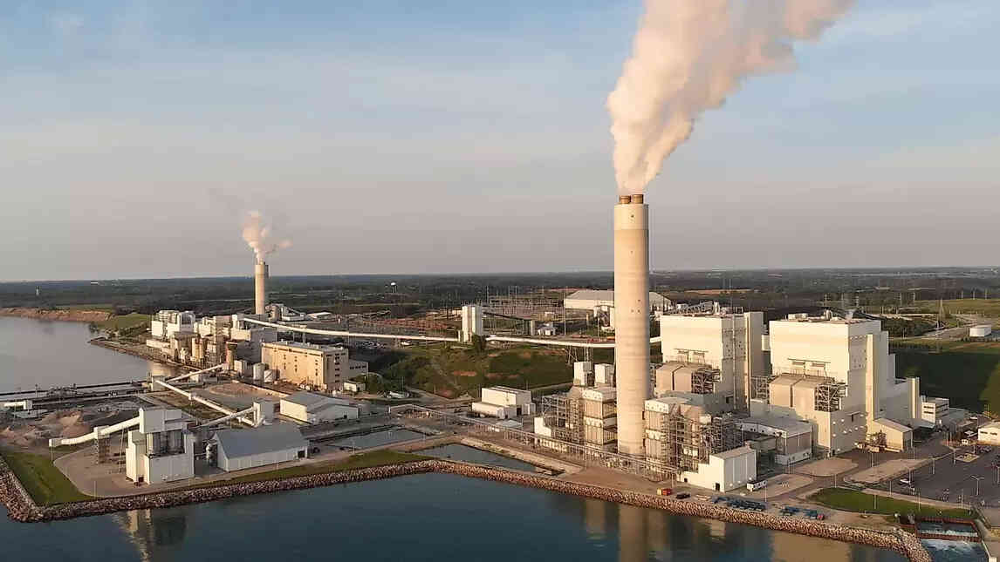
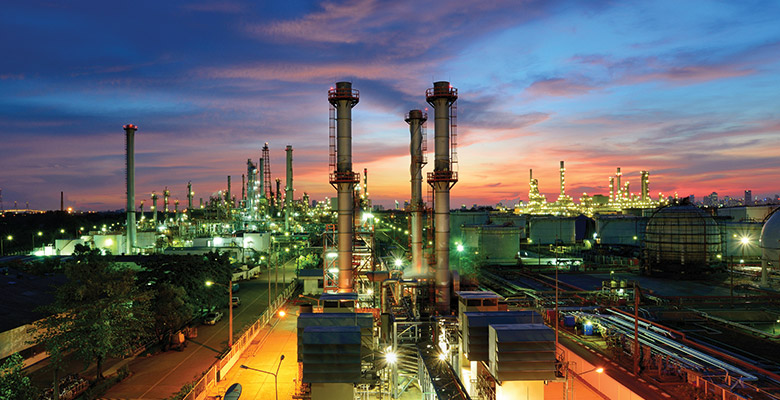

chennai
The Industry-I Vertical focuses on the continuous growth of trade and industry by developing new policies.
The Vertical envisages holistic development of the industrial and mineral sector in India, encouraging optimum mineral exploitation, decreasing the import of various minerals, and strengthening the supply chain by means of value addition.
The Vertical also plays a crucial role in enabling active engagement of the States and relevant stakeholders in achieving milestones for the industrial and economic development of India. It aims to bring together innovation, technology, and efficient management at the core of policy formulation and implementation.

Trichy
The Industry-I Vertical focuses on the continuous growth of trade and industry by developing new policies.
The Vertical envisages holistic development of the industrial and mineral sector in India, encouraging optimum mineral exploitation, decreasing the import of various minerals, and strengthening the supply chain by means of value addition.
The Vertical also plays a crucial role in enabling active engagement of the States and relevant stakeholders in achieving milestones for the industrial and economic development of India. It aims to bring together innovation, technology, and efficient management at the core of policy formulation and implementation.